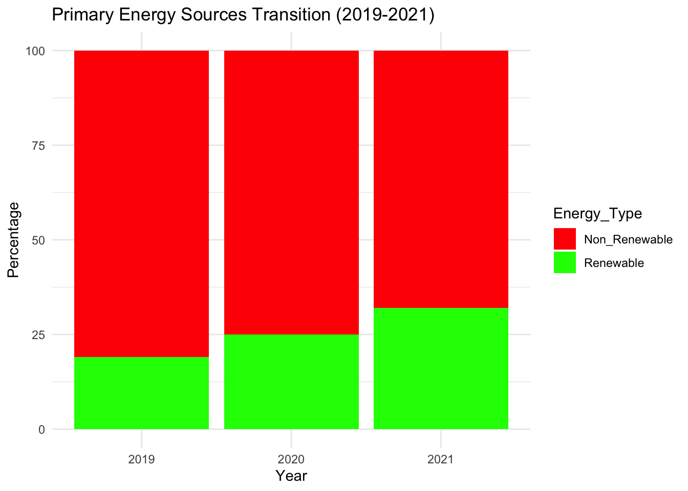

| Variable_Names | Description |
|---|---|
| Entity | The name of the country |
| Code | Country Name Abbreviation |
| Year | The year of the data |
| Renewables% | The percentage of renewable energy to all energy used |
| difference | The renewables% changes between 1985 and 2021. |
Executive Summary
The report centers on the comprehensive analysis tracing the trajectory of energy generation trends spanning ancient to modern times, elucidating the notable transition from traditional fuels to renewables. It underscores the historical dominance of fossil fuels, the dwindling role of nuclear power, and the accelerating adoption of renewables, particularly in leading nations such as China and Germany.
Furthermore, the report meticulously examines the global surge in renewable energy utilization across diverse countries, exploring the factors contributing to the gradual rise in world averages. Emphasizing the pivotal role of renewable sources like solar, wind, hydro, and geothermal, it advocates for sustainable solutions with minimal environmental footprint.
Beyond energy statistics, the study delves into the intricate relationship between the proportion of renewable consumption and countries’ GDP, seeking to unravel the nuanced dynamics between these two vital factors. By weaving together these insights, the report offers a holistic understanding of the evolving energy landscape and underscores the imperative for strategic shifts towards sustainable energy practices worldwide.
Introduction
The evolution of energy sources dates back to primitive ages, where wood and biomass fuels were prevalent, progressing into the coal-powered steam engines of the industrial revolution. The 19th century witnessed disruptive advancements in electricity generation, ushering in the dominance of fossil fuels and the emergence of nuclear power as a relatively cleaner alternative. However, recent decades have marked a significant shift fueled by climate change concerns, with a notable rise in clean and sustainable energy technologies, driving increased adoption of renewables like wind, solar, and hydroelectric power.
Renewable energy, derived from continuously replenished natural processes, stands in stark contrast to non-renewable sources, which are finite resources formed over millions of years and depleting at an alarming rate. One of the most critical distinctions lies in their environmental impact, with renewables offering a far greener alternative.
The report meticulously analyzes recent trends in the share of renewable energy in primary energy consumption across various countries. Utilizing a comprehensive dataset encompassing percentages of primary energy sourced from renewables such as hydropower, solar, wind, geothermal, bioenergy, wave, and tidal, excluding traditional biofuels. It will further elucidate the distribution of renewable energy usage globally, highlighting the five countries witnessing the highest and lowest increases in renewable energy utilization. These findings will be further scrutinized in the context of GDP analysis, offering valuable insights into the interplay between renewable energy adoption and economic dynamics.
Research Question
Our research is guided by the following objectives:
To Analyze electricity generation trends from 1985 to 2021 to gain insights into shifts and trends in renewable energy sources. It aims to provide an overview of our current standing in producing reliable, sustainable, and clean electricity and to identify areas for improvement. Furthermore, to comprehensively grasp renewable energy generation across various geographical regions, we aim to identify the countries that have been leading in renewable energy production over recent years.
To investigate, which five countries have shown the most significant advancement in the proportion of renewable energy, and approximately from which regions do these countries originate?
To delve into the correlation between share of renewable consumption and countries’ GDP, aiming to picture the nuanced relationship between energy preference and economic excellence
Dataset Introduction
Renewable Share Energy: Includes information on the share of primary energy consumption from renewable sources. The ratio of renewable energy use in countries around the world from 1965 to 2022 is recorded. This report will use data from 1985-2021. The average data for each continent and the world will be shaved off during the data cleaning process because it will not be used in this analysis.
Renewable electricity generation, World: The data provides insights into the progression of renewable energy sources over time and facilitates comparative analysis across diverse geographical regions.
Share of electricity generation from fossil fuels, renewables and nuclear: The dataset offers comprehensive insights into electricity generation, covering Fossil Fuels, Nuclear Power, and Renewable Sources since the 1960s.
Methodology
- The methodology employed in this study aimed to analyze the growth of renewable energy usage rates in various countries between 1985 and 2021. The following steps were undertaken to accomplish this:
Data Collection
Licenses: All visualizations, data, and articles produced by Our World in Data are open access under the Creative Commons BY license.
Source of Datasets: ourworldindata.org
The data is sourced from the following avenues for their respective datasets:
Renewable energy usage rates for multiple countries from 1965 to 2022: Energy Institute
Renewable Energy Generation: Energy Institute - Statistical Review of World Energy (2023)
Share of electricity generation from fossil fuels, renewables and nuclear: Ember - Yearly Electricity Data (2023); Ember - European Electricity Review (2022); Energy Institute - Statistical Review of World Energy (2023)
Low-carbon energy consumption: Energy Institute’s Statistical Review of World Energy and GDP per Capita data from the World Bank’s World Development Indicators (WDI)
Data Processing and Analysis
The foremost step is the procedure of tidying the datasets. Wherein, it comprises of subjecting the datasets to the removal of missing values, redundant variables and furthermore, renaming the variables to make them more meaningful.
The datasets then undergo further processing tailored to extract specific insights. This involves employing mathematical functions, such as calculating averages, summarizing values over multiple years, filtering and extracting specific data required to understand latest trends across different geographical locations.These operations are conducted using the R programming language within the RStudio environment. Primarily, the library tidyverse Wickham et al. (2019) is utilized to facilitate these analytical procedures.
Finally, the mathematical analyses conducted on the data are translated into visual representations, such as graphical forms, to facilitate thorough analysis and presentation of the findings. Primarily, the ggplot2 library Wickham (2016) is employed to transform the analytical results into appropriate graphical representations.
Energy Generation

Notably in Figure 1, Fossil fuels remain predominant for electricity generation, with a recent decline observed since 2015, despite a temporary decrease between 1990 and 2000. (primaryconsumption?)
Renewable energy shows consistent growth, becoming the second most utilized energy source, particularly surging around 2000. Bhuiyan et al. (2022)
Nuclear energy, initially growing, experiences a decline since approximately 1998, attributed to safety concerns and regulatory uncertainty.
| Entity | Code | Year | Other_Renewables | Solar | Wind | Hydro |
|---|---|---|---|---|---|---|
| China | CHN | 2021 | 165.926 | 327.0 | 655.8 | 1300.000 |
| China | CHN | 2020 | 135.626 | 261.1 | 466.5 | 1321.709 |
| China | CHN | 2019 | 112.725 | 224.0 | 405.3 | 1272.538 |
| China | CHN | 2018 | 93.725 | 176.9 | 365.8 | 1198.887 |
The generated dataframe offers a concise summary, as displayed in Table 1, presenting the leading countries in each year for renewable energy generation across various sources.
China consistently leads in recent years, excelling in generating the highest quantity of renewable energy across diverse resources such as wind, solar, hydro, and others.
Growth Rate of the Proportion of Renewable Energy in Total Energy Usage

Identification of Top Five Countries: - Through data analysis, the top five countries with the highest growth rates in renewable energy usage between 1985 and 2021 were identified.
- The following Table 2 presents the filtered data.
| Entity | difference | Code | Year | Renewables (% equivalent primary energy) |
|---|---|---|---|---|
| Croatia | 18.21315 | HRV | 1991 | 19.53725 |
| Croatia | 18.21315 | HRV | 1992 | 15.99459 |
| Croatia | 18.21315 | HRV | 1995 | 19.16081 |
| Croatia | 18.21315 | HRV | 1996 | 24.70118 |
| Croatia | 18.21315 | HRV | 1993 | 16.08737 |
Renewable Souces as Opposed to Non-Rewnewable Sources

Correlation Between Renewable and Non Renewable Energy Use versus Countries’ GDP

- In Figure 3, using dplyr library Wickham et al. (2023) we can seen that most of countries with low GDP per Capita tend to have also minimal share of low carbon energy usage and also the opposite. There are only 6 countries that have more than 40% of low carbon energy. The distribution of countries are concentrated in 0-25% of low carbon energy usage of total and 0-50000 dollars of GDP per Capita.
Results

From the Figure 4, Hydro power is the most utilized renewable energy source, consistently producing over 1000 TWh. Its reliability and minimal maintenance contribute to sustained high production levels.Following hydro power, wind energy emerges as the next highest used source, exhibiting a continuous increase in production since 2018.
While solar energy production has shown an upward trend, its contribution to renewable energy production remains less pronounced compared to hydro power. Both solar and wind energy face intermittency due to factors like nighttime hours and calm wind conditions. Geographical constraints and high infrastructure costs further impede their widespread adoption.
Lastly, other renewable resources have contributed the least to renewable energy producbut show a rising trend.
Further, we examined the evolution of renewable energy adoption across various entities from 1985 to 2021. The analysis primarily focused on identifying the top five entities with the highest increase in renewable energy consumption and world’s average over this period.
From the Table 3 below, you can get a clear understanding of how much these countries and the world average have grown.
| Entity | difference |
|---|---|
| Denmark | 40.391086 |
| Finland | 22.919699 |
| Sweden | 20.884522 |
| Croatia | 18.213148 |
| Germany | 17.727043 |
| World | 6.140639 |
From Figure 2, we can observe that among the top five countries with the highest growth rates, Sweden has the highest utilization rate among all countries, having grown from approximately 30% to over 50%.Germany started with a renewable energy usage rate of less than 10%, but after years of effort, it surpassed the world average from year 2010 , becoming the fifth-ranked country in terms of growth rate. Denmark had almost zero renewable energy usage rate in 1985, but it grew by over 40% in just over 30 years.Finland and Croatia had a similar trend, with an increase of around 20% during this period.
This shift is graphically represented, illustrating the proportion of renewable and non-renewable energy sources across the years. The bar chart vividly portrays the increasing dominance of renewable energy and the corresponding decline in non-renewable sources. Dissanayake et al. (2023)

The data analysis reveals a clear trend of transition towards renewable energy sources over the years. From 2019 to 2021, there has been a significant increase in the proportion of renewable energy in the total primary energy mix, with renewable sources accounting for 19%, 25%, and 32% in 2019, 2020, and 2021 respectively.
This upward trajectory indicates a growing acceptance and adoption of renewable energy technologies. Conversely, there has been a corresponding decline in the share of non-renewable energy sources over the same period. Non-renewable energy decreased from 81% in 2019 to 68% in 2021. (book?)

In recent years, high-income countries have taken the lead in promoting sustainable energy. According to Güney (2021) study, there is a positive correlation between renewable energy consumption and sustainable development. Specifically, a 1% increase in renewables is associated with a 0.326% improvement in sustainability. Conversely, reliance on non-renewable energy sources undermines sustainability.
Based on Figure 5, we can see that there are 2 countries out of total 5 countries (Switzerland and Norway) included in both highest GDP per Capita and highest share of low carbon energy usage, while the remaining three best low carbon energy user are close by the top 5 countries by GDP. This can indicate that high-income countries are more likely to invest their energy usage into the more sustainable one possibly due to capability and resources available.
This shift is graphically represented , illustrating the proportion of renewable and non-renewable energy sources across the years. The bar chart vividly portrays the increasing dominance of renewable energy and the corresponding decline in non-renewable sources. Energy Institute - Statistical Review of World Energy (2022)
Discussion
The analysis above provides a comprehensive overview of the current landscape of renewable energy generation. While fossil fuels continue to dominate the energy generation sector, the upward trajectory of renewable sources offers promising prospects for a sustainable future. As the consequences of climate change become increasingly apparent, it is imperative for countries worldwide to prioritize renewable energy development and transition towards a more sustainable energy future.
The data analysis reveals a clear trend of transition towards renewable energy sources over the years. From 2019 to 2021, there has been a significant increase in the proportion of renewable energy in the total primary energy mix, with renewable sources accounting for 19%, 25%, and 32% in 2019, 2020, and 2021 respectively. This upward trajectory indicates a growing acceptance and adoption of renewable energy technologies.
Conversely, there has been a corresponding decline in the share of non-renewable energy sources over the same period. Non-renewable energy decreased from 81% in 2019 to 68% in 2021. This shift can be attributed to various factors such as increasing awareness of environmental concerns, advancements in renewable energy technologies, and policy interventions aimed at promoting sustainable energy sources.
Conclusion
Energy generation trends show a consistent dominance of fossil fuels, with a notable increase in renewable sources, particularly hydroelectric power, while nuclear energy declines due to safety concerns. China leads global renewable energy generation, maintaining its top position across various renewable sources. Despite progress, a significant gap remains between renewable and fossil fuel energy generation, highlighting the urgent need for accelerated investment in renewables to combat climate change.
The top five countries in terms of growth in renewable energy usage rates are Denmark, Finland, Sweden, Croatia, and Germany. All of these countries are from Europe, indicating significant progress in renewable energy usage in Europe.
The findings underscore the ongoing global transition towards a more sustainable and renewable energy future. The steady increase in the adoption of renewable energy sources reflects a growing recognition of the need to mitigate climate change, reduce dependence on finite fossil fuels, and enhance energy security.
However, while progress has been made, there are still challenges to overcome, including intermittency issues associated with some renewable energy sources, the need for infrastructure investments, and policy uncertainties. Continued efforts and investments are required to accelerate the transition to renewable energy and achieve long-term sustainability goals.
Recommendations
- The world average growth rate of renewable energy usage is only 6%. We can examine the five countries with the lowest growth rates from Figure 6 to identify reasons, enabling a substantial increase in the world average in the future.

Policy Support: Governments should continue to implement supportive policies and incentives to encourage the deployment of renewable energy technologies. This includes subsidies, tax incentives, and regulatory frameworks that prioritize renewable energy development.
Investment in Research and Development: Increased investment in research and development is essential to drive innovation and improve the efficiency and cost-effectiveness of renewable energy technologies. This will help address existing challenges and unlock new opportunities in the renewable energy sector.
Infrastructure Development: Investments in renewable energy infrastructure, such as grid expansion and energy storage systems, are crucial to overcome the challenges associated with intermittency and ensure the reliable integration of renewable energy into the grid.
Public Awareness and Education: Efforts to raise public awareness and promote education about the benefits of renewable energy are essential to garner support and drive consumer demand for clean energy solutions.
Collaboration and Partnerships: Collaboration among governments, industry stakeholders, and international organizations is vital to facilitate knowledge sharing, technology transfer, and capacity building in the renewable energy sector. Building strategic partnerships can accelerate progress towards a sustainable energy future.
Reference
Bhuiyan, Miraj Ahmed, Qiannan Zhang, Vikas Khare, Alexey Mikhaylov, Gabor Pinter, and Xiaowen Huang. 2022. “Renewable Energy Consumption and Economic Growth Nexus—a Systematic Literature Review.” Frontiers in Environmental Science 10: 878394. https://doi.org/10.3389/fenvs.2022.878394.
Dissanayake, Hasara, Nishitha Perera, Sajani Abeykoon, Diruni Samson, Ruwan Jayathilaka, Maneka Jayasinghe, and Shanta Yapa. 2023. “Nexus Between Carbon Emissions, Energy Consumption, and Economic Growth: Evidence from Global Economies.” Plos One 18 (6): e0287579. https://doi.org/10.1371/journal.pone.0287579.
Energy Institute - Statistical Review of World Energy. 2022. “Share of Primary Energy That Is Low-Carbon Vs GDP Per Capita.” Our World in Data. https://ourworldindata.org/grapher/share-of-low-carbon-energy-vs-gdp?tab=table.
Güney, Taner. 2021. “Renewable Energy Consumption and Sustainable Development in High-Income Countries.” International Journal of Sustainable Development & World Ecology 28 (4): 376–85.
Wickham, Hadley. 2016. Ggplot2: Elegant Graphics for Data Analysis. Springer-Verlag New York. https://ggplot2.tidyverse.org.
Wickham, Hadley, Mara Averick, Jennifer Bryan, Winston Chang, Lucy D’Agostino McGowan, Romain François, Garrett Grolemund, et al. 2019. “Welcome to the tidyverse.” Journal of Open Source Software. https://doi.org/10.21105/joss.01686.
Wickham, Hadley, Romain François, Lionel Henry, Kirill Müller, and Davis Vaughan. 2023. Dplyr: A Grammar of Data Manipulation. https://CRAN.R-project.org/package=dplyr.